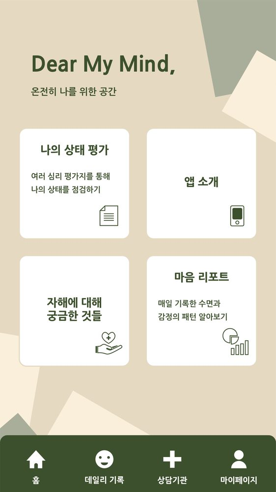
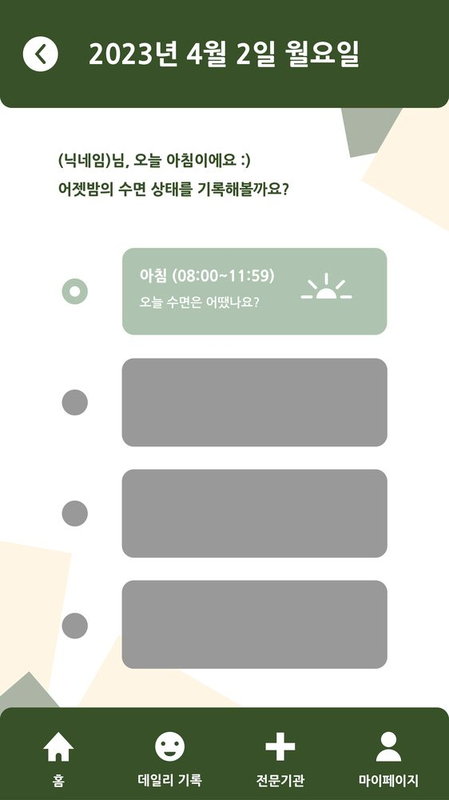
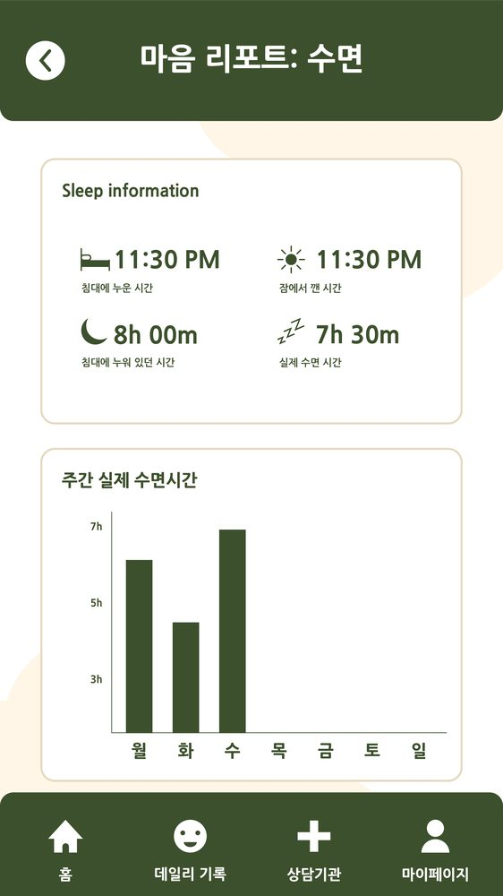
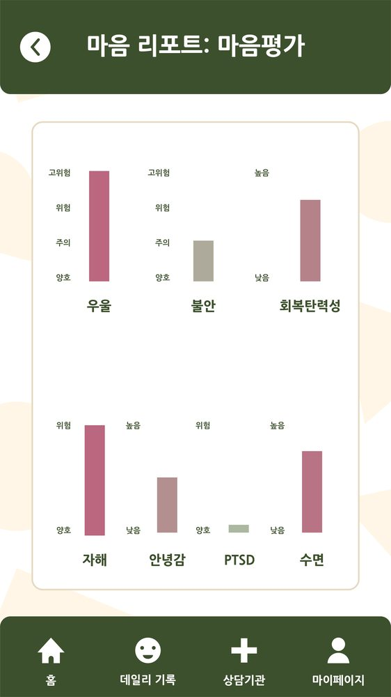

담당 범위Scope
한국연구재단 일반공동연구 지원사업으로 진행된 국가연구과제에 학부연구생으로 참여했습니다. 자해위험군의 생체정보와 설문 데이터를 합쳐 위험도를 예측하는 연구였습니다. 저는 데이터를 모으는 앱과 서버를 맡았습니다.
I joined this NRF-funded joint research project as an undergraduate researcher. The study aimed to predict risk among people at risk of self-harm by analysing biometric and survey data together, and my part was the system that collects that data.
SwiftUI로 iOS 앱을, PHP 8로 API를 만들었습니다. MySQL과 MariaDB로 데이터베이스를 설계했고, AWS에 웹 서버와 RDS를 직접 세워 개발 서버를 운영했습니다. 완성한 앱은 TestFlight로 배포했습니다. I built the SwiftUI iOS app and the PHP 8 API, designed the database on MySQL and MariaDB, set up the web server and RDS environment on AWS to run the development server, and released the app through TestFlight.
수집하는 데이터What the app collects
한 참여자에게서 세 종류의 데이터를 서로 다른 주기로 받습니다. 나중에 분석할 때 이 셋을 시점으로 맞춰야 해서, 받는 순간에 시각을 같이 저장했습니다.
Three kinds of data come from one participant on three different schedules. Because the analysis has to line them up by time, each record was stored with its timestamp from the point of collection.
| 종류Type | 주기Cadence | 내용Content |
|---|---|---|
| 사전 · 사후 설문Pre / post survey | 연구 시작 · 종료start and end | 참여 전후를 비교하기 위한 기준 응답baseline responses for before-and-after comparison |
| 일일 기록 (EMA)Daily entries (EMA) | 14일간 매일daily for 14 days | 그날의 상태를 당일에 기록 (돌이켜 적는 응답과 다른 값)state recorded on the day itself, not reconstructed later |
| 생체정보Biometric | 기기에서 연속 수집continuous, from the device | 수면·활동 등 설문과 맞춰 볼 지표sleep, activity and similar signals to align with the survey |




디자인 도구로 만든 시안이 아니라 SwiftUI 코드로 직접 구현한 화면입니다. 수면 리포트의 주간 그래프도 차트 라이브러리 없이 SwiftUI로 그렸습니다. 자해 관련 문항 화면은 민감해서 여기에 싣지 않았습니다.
Not design mockups — these screens are built directly in SwiftUI. The weekly sleep chart is drawn in SwiftUI too, with no charting library. Screens carrying the self-harm items are sensitive and are not shown here.
설문마다 화면이 따로 필요했습니다. 척도 문항, 예·아니오 분기, 선택 목록처럼 응답 형식이 달랐습니다. 앞 답에 따라 다음 문항이 바뀌는 것도 있었습니다. 화면만 85개가 나왔습니다.
Each survey type needed its own screens — Likert scales, yes/no branches, pickers — and some answers changed which question came next. That came to 85 views.
설계 결정Design decisions
테이블을 클릭하면 무엇을 담는지 나타납니다 Click a table to see what it holds
테이블을 선택하면 무엇을 담는지 표시됩니다. Select a table to see what it holds.
SurveyUser
참여자 계정입니다. 기기 정보와 가입 경로를 따로 테이블로 빼서, 같은 사람이 기기를 바꿔도 참여 기록이 이어지게 했습니다.
The participant account. Device and sign-up route live in their own tables, so a change of handset does not break the participation record.
SurveyUser → Device · SNSTypeSurvey
한 참여자의 연구 참여 한 건입니다. 참여를 시작한 날짜와 진행 상태를 담습니다.
One participant's enrolment in the study, holding the start date and its status.
SurveyDaily
하루 단위입니다. 하루 한 번만 만들어집니다. 참여자가 들어오면 오늘 날짜로 만들어진 행이 있는지 먼저 확인하고, 있으면 그 행에 이어 붙이고 없으면 새로 만듭니다. 하루 한 번 조건이 여기서 지켜집니다.
The per-day level, created once a day. When a participant opens the app it checks whether a row exists for today, continues that one if so and creates a new one if not — this is where the once-a-day rule holds.
SurveyTime
하루 안의 시간대입니다. 아침·점심·저녁·밤으로 나뉩니다. 측정 테이블은 전부 여기에 붙기 때문에, 어느 날 어느 시간대의 기록인지가 자동으로 따라옵니다.
The slot within a day — morning, midday, evening, night. Every measurement table hangs off this, so the day and the slot travel with each record automatically.
SleepCheck
수면 문항입니다. 잠든 시각과 깬 시각을 시간 자료형으로 저장해, 앱에서 주간 수면시간 그래프로 다시 보여줍니다.
The sleep items, storing times as time values so the app can show the week's sleep back as a chart.
ConditionCheck
컨디션 문항입니다. 분기가 있는 문항은 Q3A1, Q3A2처럼 하위 번호를 붙여, 어떤 답을 골라 나온 문항인지 구분할 수 있게 했습니다.
Condition items. Branching questions carry sub-numbers such as Q3A1 and Q3A2, so it stays clear which answer led to which follow-up.
EmotionCheck
기분 문항입니다. 하루 중 정해진 시간대에 받습니다.
Mood items, collected at set points in the day.
EmotionLog
기분 일기입니다. 활동마다 시작·종료 시각을 따로 받습니다. 몇 시에 무엇을 했는지가 수면·기분 기록과 맞춰 볼 값이라, 자유 텍스트로 뭉뚱그리지 않고 시각을 나눠 저장했습니다.
The mood diary, taking a start and end time for each activity. What happened when has to line up against the sleep and mood records, so the times are stored as fields rather than buried in free text.
Schedule
참여자가 적는 일정입니다. 누구와 있었는지와 장소를 함께 받습니다. 활동 유형은 목록에서 고르되 목록에 없으면 직접 쓸 수 있게 두 칸으로 나눴습니다.
Participant-entered activities, with who they were with and where. The activity type is picked from a list, with a separate free-text field for anything the list does not cover.
PrePost · PrePost1 – 15
연구 시작과 끝에 받는 설문입니다. 척도가 서로 다른 15개 검사지라, 하나의 큰 테이블에 몰아넣지 않고 검사지마다 테이블을 나눴습니다. 문항 수와 자료형이 제각각이어서 한 테이블로 묶으면 빈 칸이 대부분인 표가 됩니다.
The surveys taken at the start and end of the study — fifteen separate instruments with different scales, each given its own table. Their item counts and types differ enough that one combined table would have been mostly empty columns.
PrePost → PrePost1 … PrePost15- 참여자 · 문항 · 시점을 함께 저장했습니다. 반복 측정 연구라 한 사람이 같은 문항에 여러 번 답합니다. 응답만 남기면 어느 날 몇 번째 답인지 알 수 없습니다. 세 가지를 같이 기록했습니다.
- A response is stored with its moment, not on its own. In a repeated-measures study the same person answers the same item many times; storing only the answer makes it impossible to say later which day or which round it belonged to, so participant, item and timestamp are recorded together.
- 하루 한 번인지 서버에서 확인했습니다. 일일 기록은 그날 한 번만 유효합니다. 앱에서만 막으면 재설치하거나 기기 시간을 바꿔서 피할 수 있습니다. 서버에 그날 기록이 있는지 확인하는 경로를 따로 뒀습니다.
- The once-a-day rule is checked on the server. A daily entry only counts once for that day, and a client-side guard can be bypassed by reinstalling or changing the clock — so a server endpoint checks whether that day already has a record.
- 문항을 번호로 관리했습니다. 설문 문구는 연구 중에도 바뀝니다. 번호로 저장해 두면 문구가 바뀌어도 앞서 받은 응답과 이어서 볼 수 있습니다.
- Items are keyed by number rather than hardcoded. Survey wording changes while a study is running; storing responses against item numbers keeps earlier answers comparable after a rewrite.
- 화면을 전부 SwiftUI로 짰습니다. 척도 문항, 예·아니오 분기, 선택 목록, 리포트 그래프까지 외부 UI·차트 라이브러리 없이 구현했습니다. 수면 리포트의 주간 막대그래프도 값에 따라 높이를 계산해 직접 그렸습니다.
- Every screen is SwiftUI. Likert items, yes/no branches, pickers and the report charts are all built without an external UI or charting library — the weekly sleep bars are drawn by computing each height from the value.
- 기기 사용 데이터는 DeviceActivity로 받았습니다. 참여자가 따로 입력하지 않아도 모이는 값이라, 설문 응답과 맞춰 보려면 같은 시점 기준으로 저장해야 했습니다.
- Device-usage data comes through DeviceActivity. It accumulates without the participant entering anything, so it had to be stored against the same time reference as the survey responses to be comparable.
- 조회 기능까지 만들었습니다. 연구자가 모인 데이터를 직접 봐야 해서, 참여자별 응답과 사전·사후 비교를 불러오는 API를 같이 만들었습니다.
- Collection was wired through to retrieval. Researchers need to see what was gathered, so the API also serves per-participant responses and the pre/post comparison. Data that only accumulates on a server never reaches the study.
- 참여 안내 화면을 앱에 넣었습니다. 연구 소개와 자해 설명을 각각 따로 뒀습니다. 참여자가 무엇에 동의했고 무엇이 기록되는지 알아야 그 응답을 연구에 쓸 수 있습니다.
- Participant information lives inside the app — screens explaining the study and the subject itself. A response given without understanding what is being consented to and recorded is not usable data.
서버와 배포Server and release
- AWS에 개발 서버를 직접 세웠습니다. 웹 서버와 RDS를 설정하고 운영했습니다. 연구 일정에 맞춰 앱과 서버를 같이 고쳐야 해서, 배포 환경까지 제가 들고 있는 편이 빨랐습니다.
- I set up the development server on AWS — the web server and an RDS-backed database — and ran it. App and server had to change together against the study schedule, so holding the deployment environment myself was faster.
- API를 기능별로 나눴습니다. 설문 저장, 일일 기록 확인, 사전·사후 조회, 보고서 조회, 알림 발송을 각각 분리했습니다. 연구 중에 설문 하나가 바뀌어도 다른 경로를 건드리지 않고 고칠 수 있게 했습니다.
- The API is split by function — saving responses, checking the day's entry, reading pre/post data, pulling reports, sending notifications. When one survey changed mid-study, it had to be possible to fix that without touching the rest.
- TestFlight로 배포했습니다. 연구진이 각자 아이폰에 설치해 직접 써 보고, 거기서 나온 피드백으로 고쳤습니다. 시뮬레이터에서만 돌려 봤다면 못 찾았을 문제가 있었습니다.
- Released through TestFlight so the research team could install it on real devices. Running in a simulator and running on a participant's phone are not the same thing.
민감 데이터Working with sensitive data
정신건강 연구 데이터라 조심할 부분이 많았습니다. 응답이 어느 시점의 것인지 어긋나면 분석 결과가 달라지고, 그 결과로 참여자의 위험도를 판단하게 됩니다.
Mental-health research data cannot simply be deleted away when it goes wrong. If a recorded response drifts from the moment it belongs to, the analysis changes — and that analysis is what a risk judgement rests on.
수집하는 순간에 시각을 같이 저장하고, 하루 한 번 조건을 서버에서 확인한 것도 그 때문입니다.
This is where I first felt how directly the accuracy of data carries into whether a system can be trusted. The habit of recording where data came from and when, which runs through my later projects, started here.